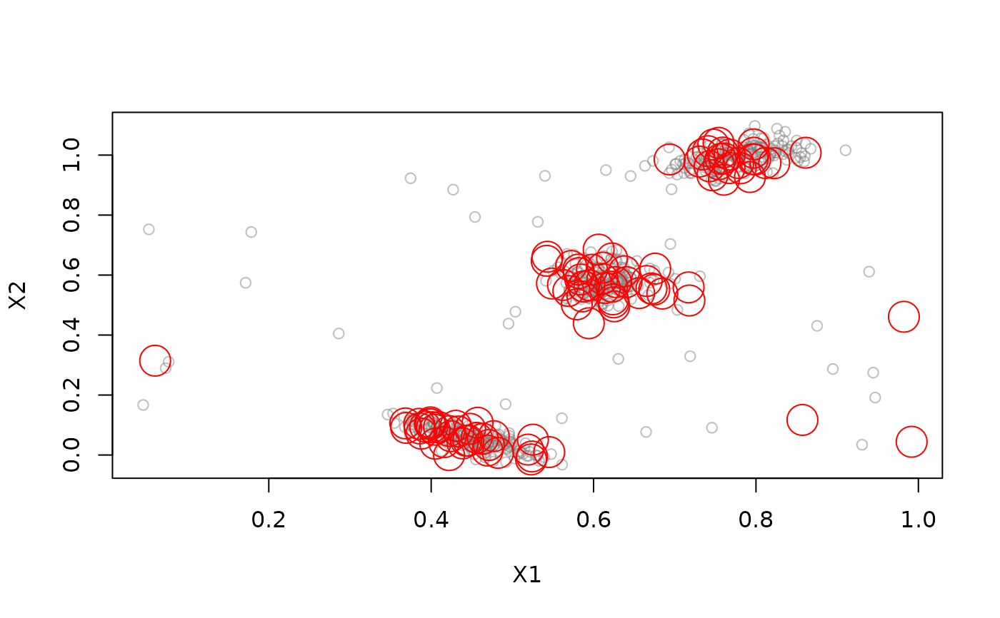

Interface for DSO_Window. Represents the points in the sliding window as micro-clusters.
Details
If lambda is greater than 0 then the weight uses a damped window
model (Zhu and Shasha, 2002). The weight for points in the window follows
\(2^{-lambda*t}\) where \(t\) is the age of the point.
References
Zhu, Y. and Shasha, D. (2002). StatStream: Statistical Monitoring of Thousands of Data Streams in Real Time, International Conference of Very Large Data Bases (VLDB'02).
See also
Other DSC_Micro:
DSC_BICO(),
DSC_BIRCH(),
DSC_DBSTREAM(),
DSC_DStream(),
DSC_Micro(),
DSC_Sample(),
DSC_evoStream()
Examples
stream <- DSD_Gaussians(k = 3, d = 2, noise = 0.05)
window <- DSC_Window(horizon = 100)
window
#> Sliding window
#> Class: DSC_Window, DSC_Micro, DSC_R, DSC
#> Number of micro-clusters: 0
update(window, stream, 200)
window
#> Sliding window
#> Class: DSC_Window, DSC_Micro, DSC_R, DSC
#> Number of micro-clusters: 100
# plot micro-clusters
plot(window, stream)

# animation for a window using a damped window model. The weight decays
# with a half-life of 25
if (FALSE) { # \dontrun{
window <- DSC_Window(horizon = 25, lambda = 1 / 25)
animate_cluster(window, stream, horizon = 1, n = 100, xlim = c(0, 1), ylim = c(0, 1))
} # }